Computer-Aided Design (CAD), Tool Exploration & Affinity Ideation
Systematic exploration of 2D/3D digital design software, parametric modeling benchmarks, and user-centered problem synthesis through Affinity Diagrams (KJ Method) and failure mode classification matrices.
1. Problem Formulation & Ideation: Affinity Diagram (KJ Method)
Collaborative Brainstorming & Requirement Clustering
Prior to CAD geometry creation, our team conducted an unstructured ideation session where each member proposed critical functional requirements, clinical constraints, and user vulnerabilities on sticky notes. To structure this qualitative feedback, we applied the Affinity Diagram (KJ Method), grouping interconnected concepts into thematic clusters and translating them into an auditable Failure Mode Classification Matrix (Depuración de Fallas).
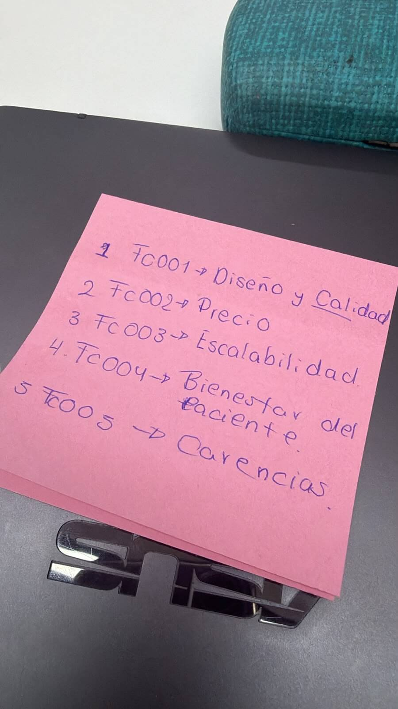
Phase 1: Divergent Idea Generation
Initial collection of raw pain points written on individual post-its: high device acquisition cost, skin pressure sores, and brace abandonment.
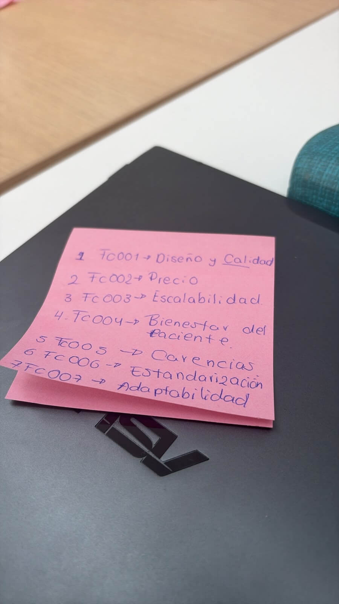
Phase 2: KJ Method Grouping
Consolidation of cards into four primary problem clusters: Design & Biomechanical Quality, Affordable Pricing, Growth Scalability, and Infant Ergonomic Wellbeing.
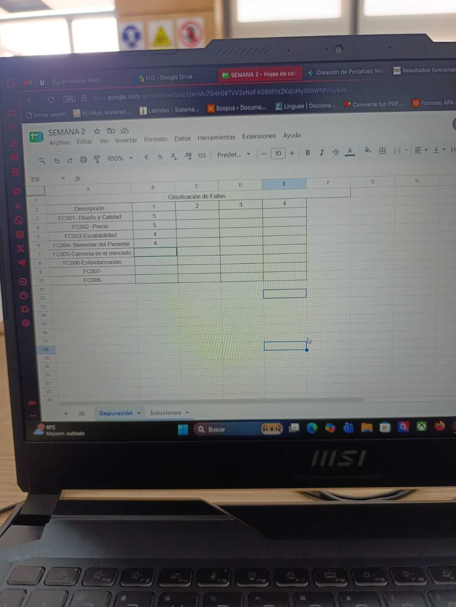
Phase 3: Quantitative Prioritization
Conversion into an algorithmic spreadsheet ranking failure categories (FC001: Design, FC002: Cost, FC003: Scalability, FC004: Comfort) to guide engineering requirements.
2. Digital Design & Fabrication Software Benchmark
During Week 2, our objective was to experiment with multiple CAD, raster, vector, rendering, and simulation environments to determine which tools best serve each stage of the Kurimanya Kids development pipeline. Below is our comparative assessment:
| Software | Category | Primary Utility | License | Learning Curve |
|---|---|---|---|---|
| GIMP | Raster Editor | Image processing, layer masking, asset cropping, and texture filtering | Open-Source (Free) | Medium |
| Krita | Raster / Digital Painting | Freehand concept sketching and biomechanical conceptual illustrations | Open-Source (Free) | Low - Medium |
| Inkscape | Vector Graphics | Vector iconography, logo design, path boolean operations, and laser cutter vector preparation | Open-Source (Free) | Medium |
| LibreCAD | 2D CAD | Lightweight 2D technical drawings, dimensioning, and CNC toolpath profiles | Open-Source (Free) | Low - Medium |
| AutoCAD | 2D/3D Industrial CAD | High-precision orthogonal drafting, geometric constraints, and standard architectural layouts | Proprietary / Educational | Medium |
| FreeCAD | Parametric 3D CAD | Feature-based solid modeling with fully constrained sketches (Part Design Workbench) | Open-Source (Free) | Medium - High |
| Autodesk Fusion 360 | Integrated CAD / CAM / CAE | Parametric solid modeling, freeform T-Splines surface sculpting, assemblies, and FEA simulation | Commercial / Educational | Medium |
| Blender | 3D Mesh Modeling & Render | Organic polygonal modeling, photorealistic rendering (Cycles/Eevee), and dynamic mechanism animation | Open-Source (Free) | High |
| Wokwi / Tinkercad Circuits | Firmware & Circuit Simulation | Virtual prototyping of ESP32 / Arduino firmware, breadboarding, and FSR sensor validation | Web-Based (Free) | Low |
3. Practical Hands-On Exercises by Design Environment
AutoCAD 2024: 2D Parametric Drafting & Icon Vectorization
Orthogonal drafting, coordinate offset tracing, and precise arc/fillet reconstruction
We used AutoCAD to practice geometric constraint alignment, relative Cartesian coordinate inputs, and arc reconstruction. The exercise focused on drafting the Android system logo from technical primitives (lines, tangent circles, and trimmed boundaries), validating snapping tools and layer hierarchy management.
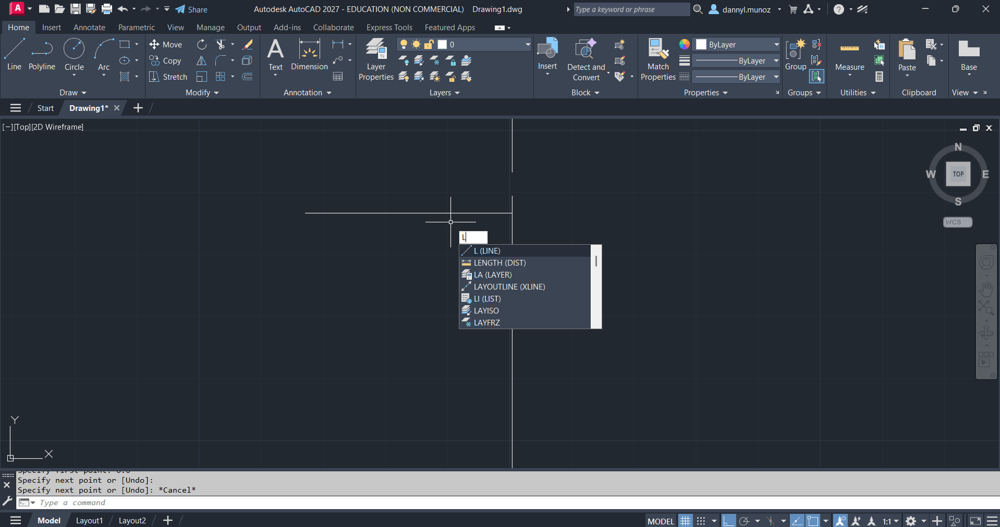
1. Coordinate Grid Setup
Establishing origin points and horizontal alignment baselines.
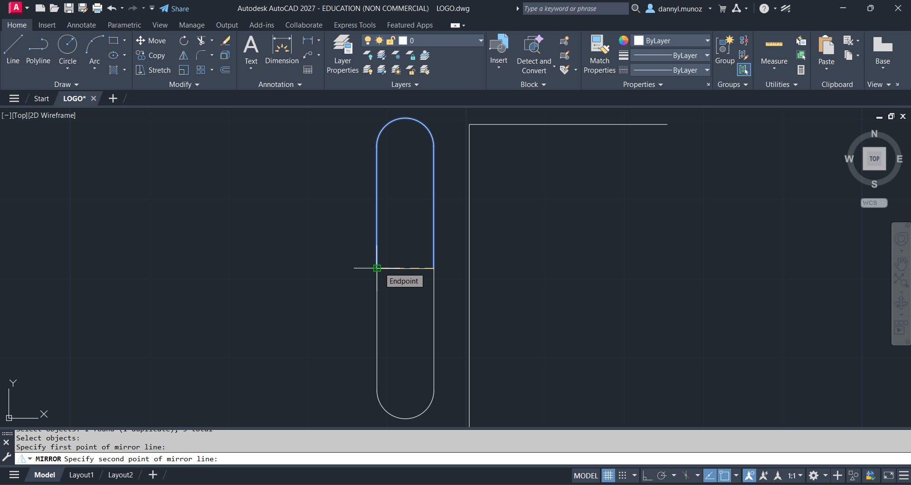
2. Torso Geometry
Executing offset commands to define outer boundary margins.
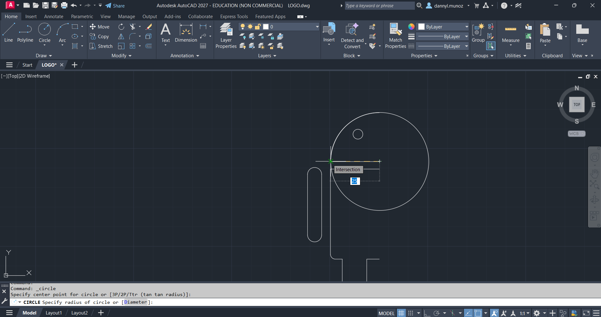
3. Head Hemisphere
Drafting tangent circles and center-point radius constraints.
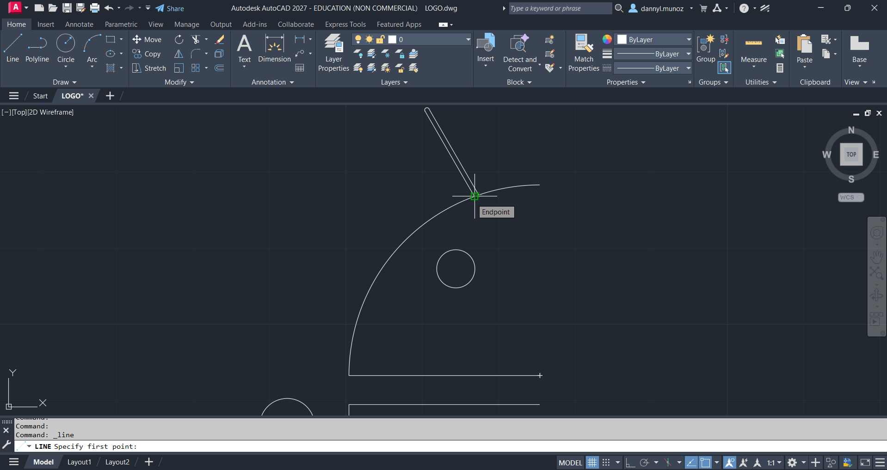
4. Boundary Trimming
Applying the Trim tool to remove overlapping curves and add fillets.
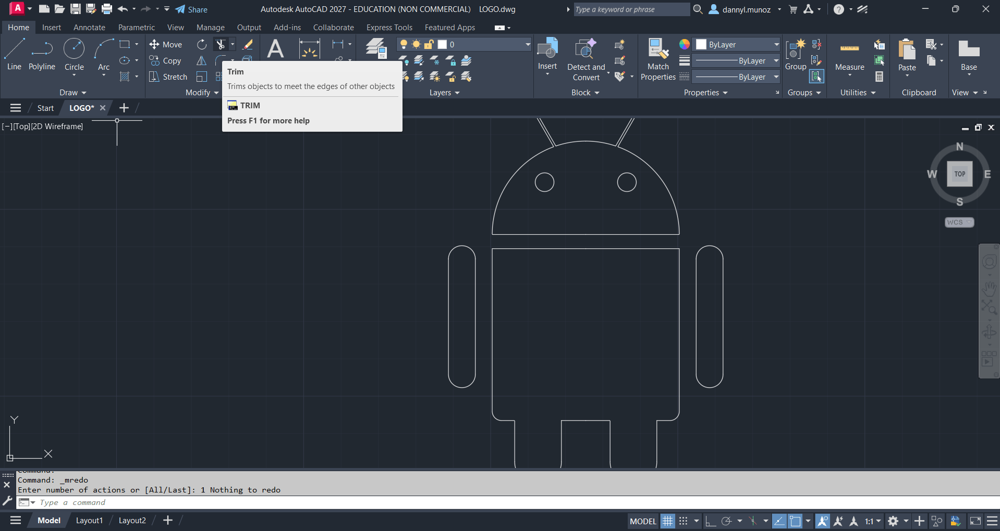
5. Completed Vector Profile
Final closed polyline geometry ready for DXF export.
LibreCAD: Lightweight Open-Source 2D Profiling
Minimalist CAD engine for direct 2D laser-cutting DXF preparation
LibreCAD was evaluated as a zero-cost, lightweight alternative for FabLab vector workflows. We constructed a mechanical mounting bracket utilizing absolute coordinate inputs, circle tangencies, and segment intersections to verify DXF interoperability.
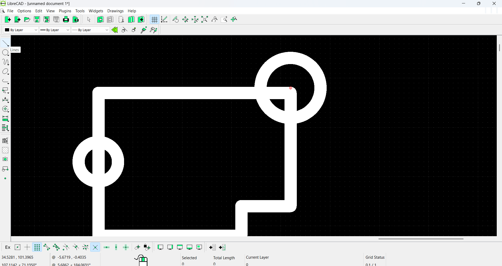
1. Perimeter Layout & Intersections
Constructing orthogonal reference segments and circle centers at exact dimensional coordinates.
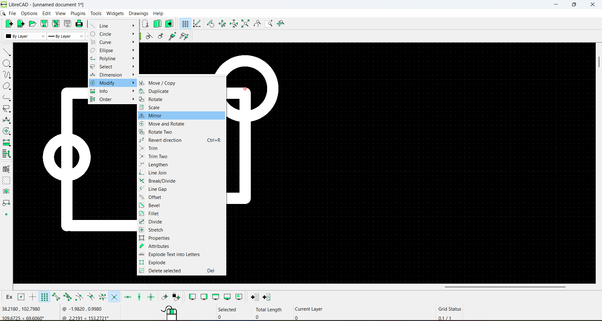
2. Boolean Filleting & Clean-up
Trimming superfluous circular segments to produce a continuous planar mechanical outline.
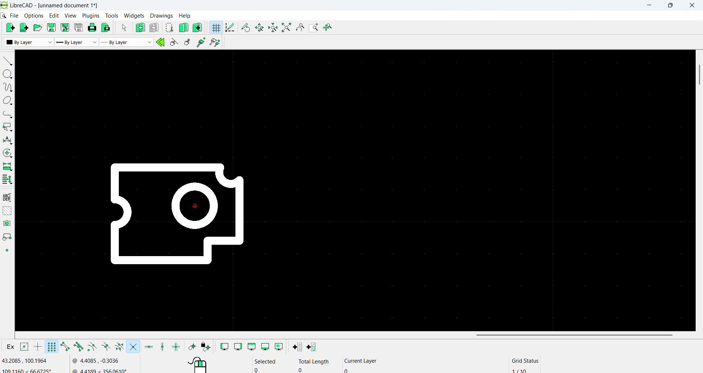
3. Validated 2D DXF Contour
Final closed outline verified with zero non-manifold gaps, directly compatible with CO2 laser cutters.
FreeCAD: Parametric Solid Modeling & PartDesign
Fully constrained sketches, pads, pockets, and edge chamfering
In FreeCAD, we focused on the Part Design Workbench. We generated a fully constrained 2D sketch with dimensional equality constraints, extruded it into a 3D solid pad, and executed cylindrical corner pocket cuts to model a mounting baseplate suitable for additive manufacturing.
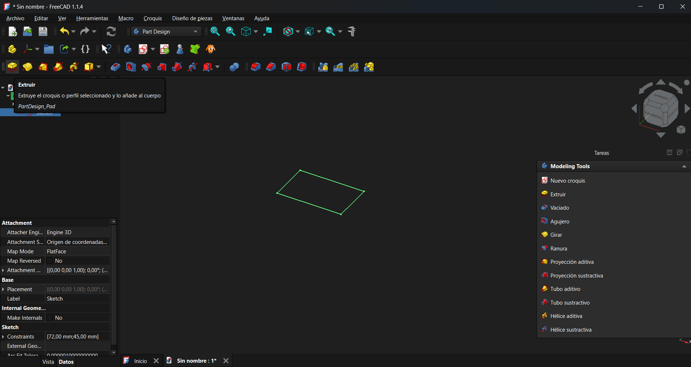
1. Constrained 2D Sketch
Establishing geometric symmetry and dimensional constraints to reach 0 degrees of freedom (fully green sketch).
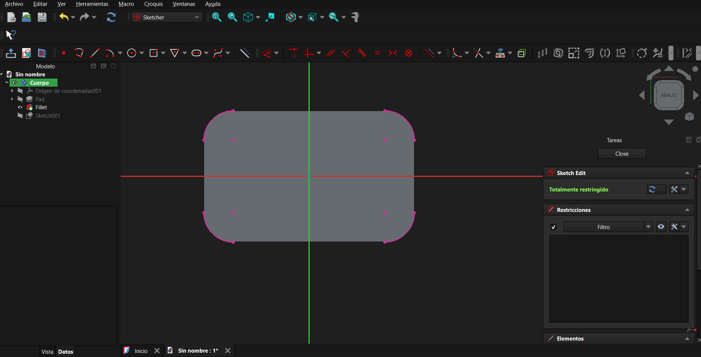
2. Solid Pad & Edge Rounding
Extruding the planar profile along the normal Z-axis and applying structural corner fillet radii.
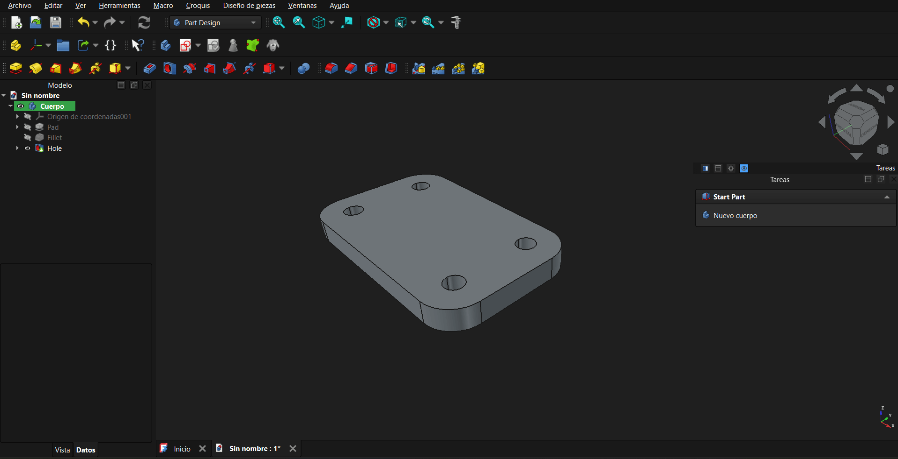
3. Completed Parametric Part
Adding counterbored mounting holes via Pocket operations, producing a watertight solid for 3D printing.
Autodesk Fusion 360: Cloud CAD/CAM & Anatomical Modeling
Integrated sketches, revolving features, organic sweeps, and rendering
Fusion 360 represents the primary design suite selected for the Kurimanya Kids orthosis. During this exploratory exercise, we practiced multi-plane sketching, extrusions, revolves, and face drafting to create a circular interface plate with relief features and mounting slots.
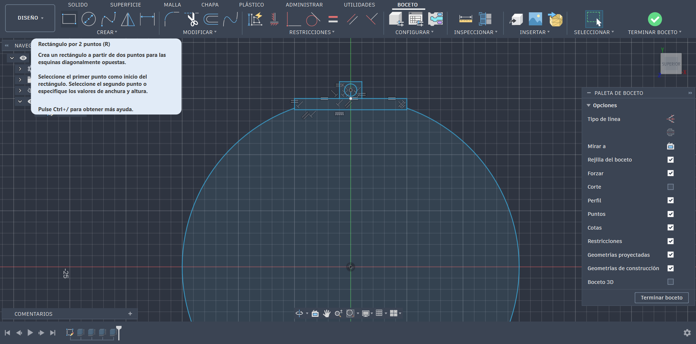
1. Centerline & Symmetry
Creating radial construction lines on the horizontal workplane.
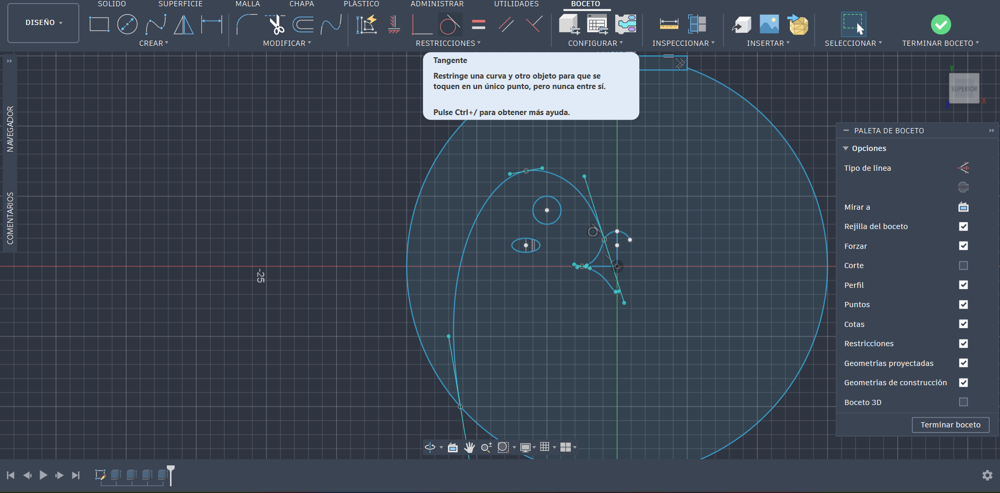
2. Spline Curves
Tracing organic internal curves using fitted control-point splines.
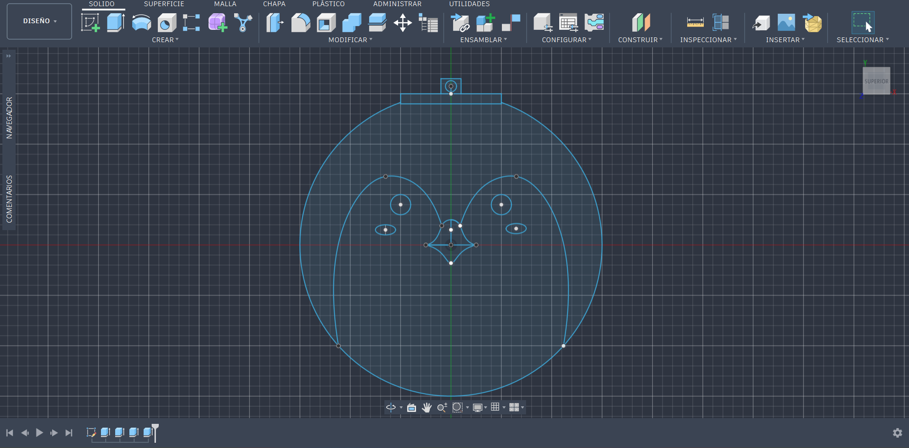
3. Profile Revolve
Extruding a 360° circular disc from a cross-sectional profile.
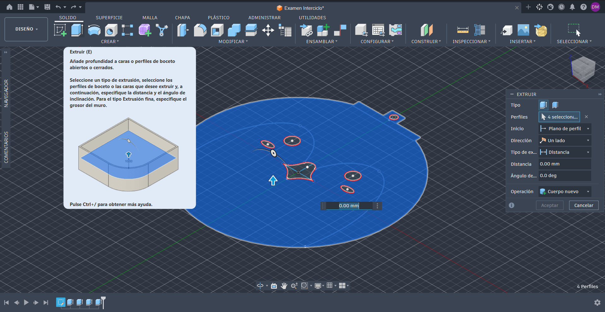
4. Selective Extrude Cut
Projecting sketches onto curved faces to produce blind pockets.
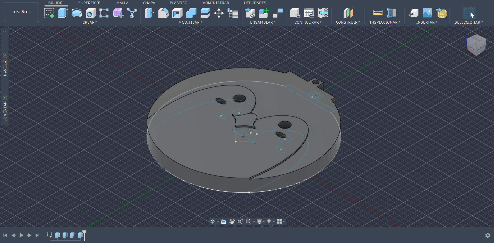
5. Shaded Solid Model
Final component render ready for STL slicing and CAM simulation.
Blender 4.x: Mesh Modeling, Lighting & Rendering
Subdivision surfaces, edge loop extrusion, and viewport shading
Blender was evaluated for high-fidelity conceptual rendering and kinematic assembly animations. We modeled a trampoline structure starting from a primitive cylinder mesh, applying inset faces, extrusions along surface normals, loop cuts, and three-point studio lighting.
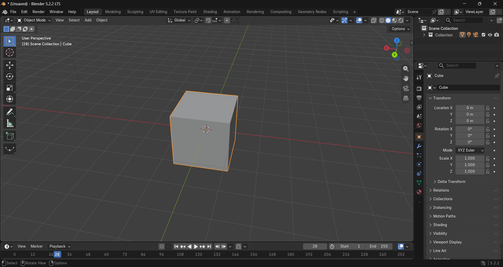
1. Base Mesh Initialization
Configuring the perspective camera, world environment lighting, and scaling the base primitive in Edit Mode.
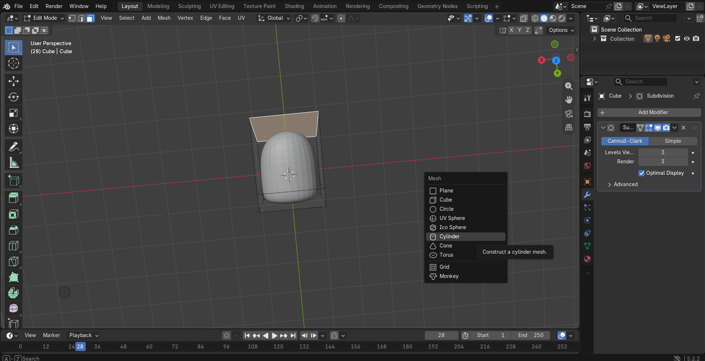
2. Edge Loops & Structural Legs
Adding loop rings (Ctrl + R) and extruding face clusters downward to construct supporting legs.
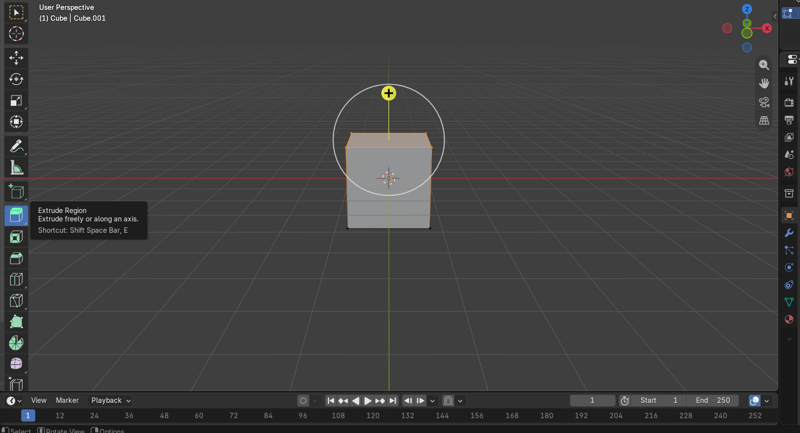
3. Completed Trampoline Model
Assigning BSDF surface shaders and generating a real-time Eevee viewport preview of the finished asset.
4. Conclusions & Project Toolchain Selection
Through hands-on exploration across diverse CAD platforms, our team reached definitive conclusions regarding software suitability for medical hardware manufacturing at FabLab Cuenca:
Primary CAD Suite: Fusion 360 + FreeCAD
Autodesk Fusion 360 was selected as our primary tool for developing the smart orthosis due to its superior cloud collaboration, T-Splines organic ergonomic sculpting (critical for adapting shoe shells to infant feet), and native CAM export for 3D slicing. FreeCAD will be maintained in parallel to ensure open-source reproducibility.
Vector Profiling: AutoCAD + LibreCAD
For rapid production of biocompatible leather straps and foam padding, LibreCAD and AutoCAD allow us to generate precise 2D DXF cut sheets that integrate directly into the FabLab laser cutter software (RDWorks) without polygon mesh translation errors.
Original Source CAD Files (Google Drive)
Access the complete archive containing raw design assets (.dwg, .dxf, .FCStd, .blend, and .f3d).